AI Academy · Level 1 · Grade 6 · Week 12 · Student lesson
Debug the Cause
Learn to understand, design, build, test and explain AI systems responsibly.
Project: Helpful Classroom Sorter
Before you start
Weeks 9–11: trace state, conditions and repetition.
Plan time to read, investigate and explain. Keep predictions separate from observations.
Student lesson · 1 of 17
Your mission
Your learning target
I can compare expected and observed traces to locate the first difference.
I can choose a test that distinguishes competing explanations of a fault.
I can repair a stated instruction and rerun both the failing case and earlier passing cases.
Remember before reading
Close your notes first. A rough first answer helps us choose the right starting point; it is not a score for your ability.
Without opening the old lesson, explain one key idea from Repeating Efficiently. Give an example and a mistake that the idea helps you avoid.
Without opening the old lesson, explain one key idea from Algorithms as Recipes. Give an example and a mistake that the idea helps you avoid.
Without opening the old lesson, explain one key idea from Sound Becomes a Signal. Give an example and a mistake that the idea helps you avoid.
After trying, check the relevant lesson or ask your teacher. Change the part of your explanation that the evidence shows was wrong.
Debugging finds the broken assumption or step before changing the solution.
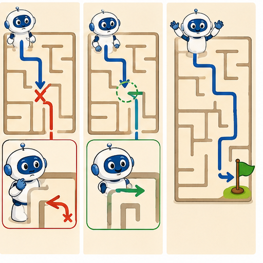
Learner name:
Readiness for the connected explanation
Start at 3. While counter is below 7, add 2. List the values at every test and state when the body stops running.
This week’s end goal
By the end, I can choose a test that separates two possible causes of an error.
Student lesson · 2 of 17
Notice the evidence
PICTURE STORY
Look Closely Before You Explain
Pictures give clues; evidence tells us what the clues mean.

What do you notice?
Name three visible details without explaining them yet.
Circle the detail most connected to the system's decision.
Name one detail that may be decoration or distraction.
Make a first prediction and state the clue that supports it.
My observations, prediction, and evidence:
A closer explanation
A paper points machine must add 3 to its starting score, double the updated score, then subtract 2 and report. From 4 the expected values are 4, 7, 14 and 12. These instructions are the specification. Calculate the expected result from them before looking at the machine output.
An observed run instead records 4, 7, 11 and 9. The final result is wrong, but changing the report from 9 to 12 would only hide this particular failure. Compare the intermediate values to find where the behaviour first stopped matching the instructions.
The first difference is after the doubling instruction: expected 14, observed 11. The final subtraction is consistent with the observed 11, since 11 minus 2 is 9. That later difference can be a consequence of the earlier fault rather than a second faulty subtraction. A trace narrows the investigation; it does not automatically reveal every cause.
Student lesson · 3 of 17
See how it works
VISUAL MECHANISM
Input → Process → Output
Follow the information instead of imagining magic inside the machine.
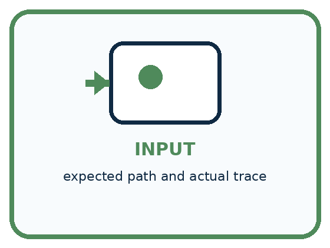
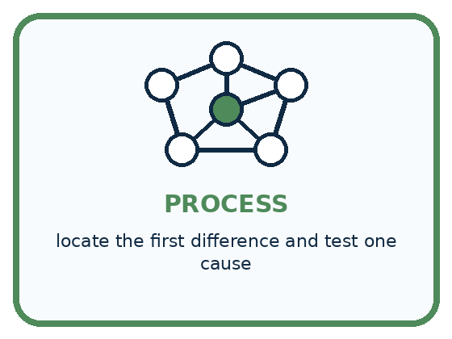
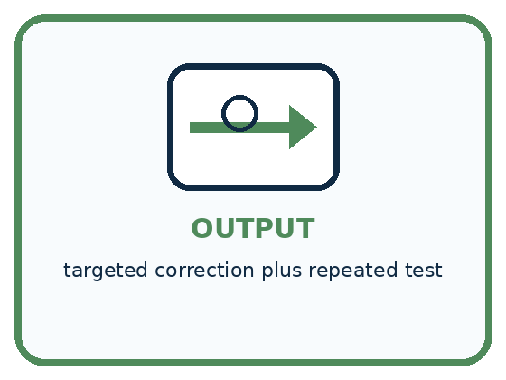
INPUT expected path and actual trace
PROCESS locate the first difference and test one cause
OUTPUT targeted correction plus repeated test
Draw a fresh example with all three stages:
A closer explanation
Locate the first mismatch
Record the input, the exact instruction version, expected values, observed values and first mismatch. This makes the failure reproducible: someone else can follow the same procedure with the same starting value and check your observation.
Do not rewrite the expected column to match the observed result. If the specification itself seems ambiguous, clarify it first and record that change openly. A test can judge an implementation only against a stated expectation.
Connect the picture and the explanation
Point to the input, the deciding step and the result in this week’s visual. Explain the same step in ordinary words. A picture helps when you can say what each part represents.
Student lesson · 4 of 17
Compare the cases
PICTURE GALLERY
Four Cases, Four Clues
Use the visual cue, then read the evidence carefully.
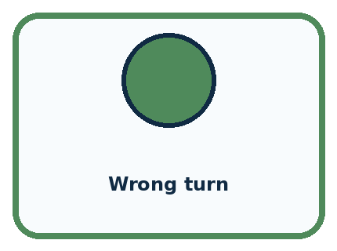
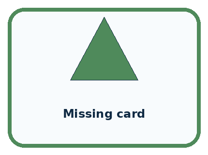
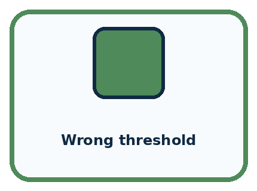
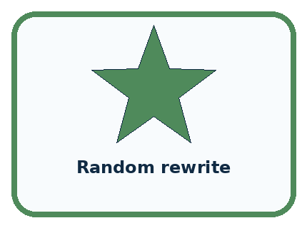
CASE 1 — Wrong turn Clue: first divergence at step 4. Meaning: inspect orientation assumption.
CASE 2 — Missing card Clue: input absent before step 1. Meaning: data/setup cause.
CASE 3 — Wrong threshold Clue: branch changes at 10. Meaning: condition cause.
CASE 4 — Random rewrite Clue: many steps changed. Meaning: weak debugging evidence.
Which two pictures are easiest to confuse? What evidence separates them?
Change one thing in the pictured case
Change: Use input 6 again instead of 2.
Prediction: Both hypotheses predict 12; the test remains inconclusive.
Reason: A revealing test requires different predicted outputs, not merely another recorded run.
Student lesson · 5 of 17
Words that unlock the idea
VOCABULARY
Words You Can See and Use
The badge is a memory cue; the definition does the real thinking work.
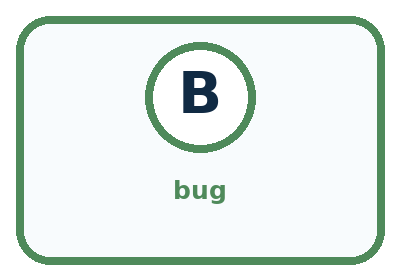
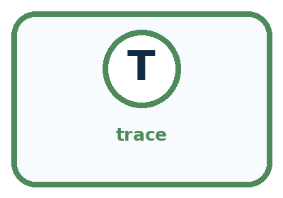
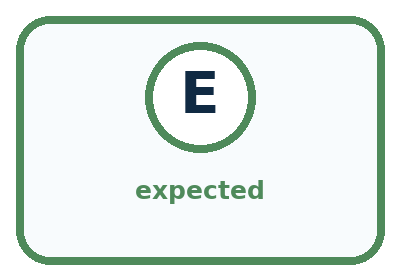
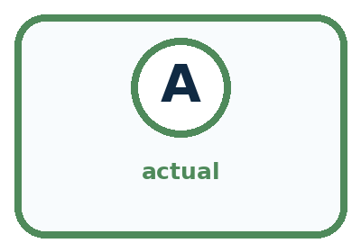
| Word | Meaning | My example |
|---|---|---|
| bug | cause of incorrect or unexpected behavior | |
| trace | record of steps and changing state | |
| expected | result predicted before the test | |
| actual | result observed during the test |
Misconception detective
CLAIM TO REPAIR Debugging means rewriting everything that looks suspicious.
Use one vocabulary word and one piece of evidence to repair it:
Words used in the closer explanation
| Word | Meaning |
|---|---|
| Specification | A statement of what a system is required to do |
| Expected result | The result worked out from the specification before running a test |
| Observed result | The result actually recorded during a test |
| First divergence | The earliest step where observed behaviour differs from expected behaviour |
| Regression test | A repeated check that previously correct behaviour still works after a change |
Student lesson · 6 of 17
Follow a worked example
WORKED EXAMPLE
Watch the Reasoning, Not Just the Answer
Every step connects a claim to observable evidence.

STEP 1 — OBSERVE expected path and actual trace
STEP 2 — TRACE locate the first difference and test one cause
STEP 3 — CONCLUDE targeted correction plus repeated test
What new evidence could change this answer?
A closer explanation
For the faulty doubling step, two explanations fit the observed change from 7 to 11. Perhaps the step adds 4. Perhaps it adds the original starting score, which was 4. Repeating the same start 4 cannot separate those explanations because they make the same prediction.
| Start score | Expected final result | If step adds 4 or original start |
|---|---|---|
| 4 | 12 | 9 under either explanation |
| 2 | 8 | 7 if add 4 or 5 if add original 2 |
| 5 | 14 | 10 if add 4 or 11 if add original 5 |
Starting at 2 produces 5 after the first addition. The intended double gives 10 and then reports 8. Adding 4 would give 9 and report 7. Adding the original 2 would give 7 and report 5. The different predictions make this a revealing test.
If the observed final result is 7, it supports add 4 over add original among these two explanations. Other faults could still give 7, so inspect the actual instruction or more checkpoints before claiming a unique cause.
Learn from the worked case
Cover the result before checking it. Say what is given, choose the procedure, and follow one step at a time. Then uncover the result and explain your first mismatch. Ask why a step is allowed, not only what number it produces.
A pictorial worked case: Debug the Cause
A fictional paper calculator should double the current value, but a copied instruction behaves strangely.
The facts we will use
After input 6, the faulty step reports 12. Hypothesis A: add 6. Hypothesis B: double.
Both hypotheses fit this first observation. A new input may be chosen.
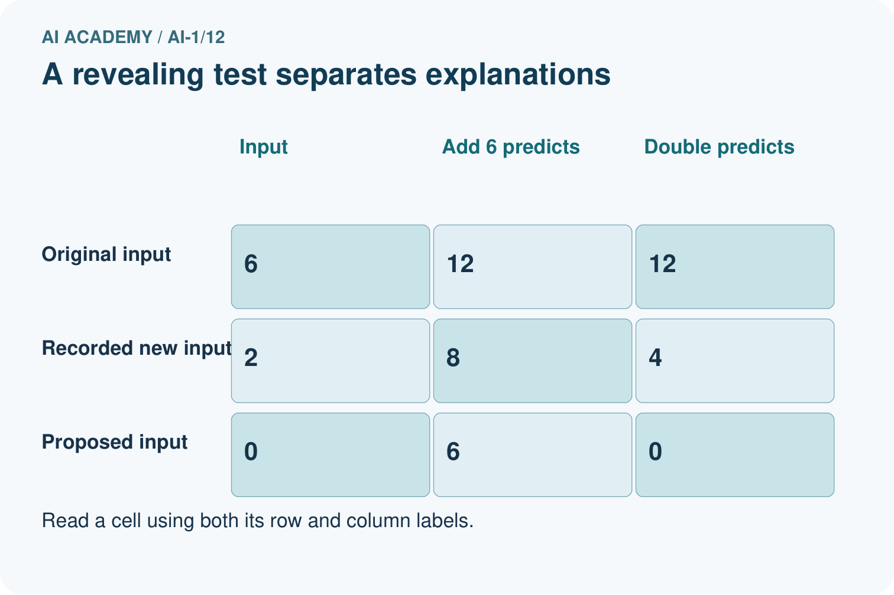
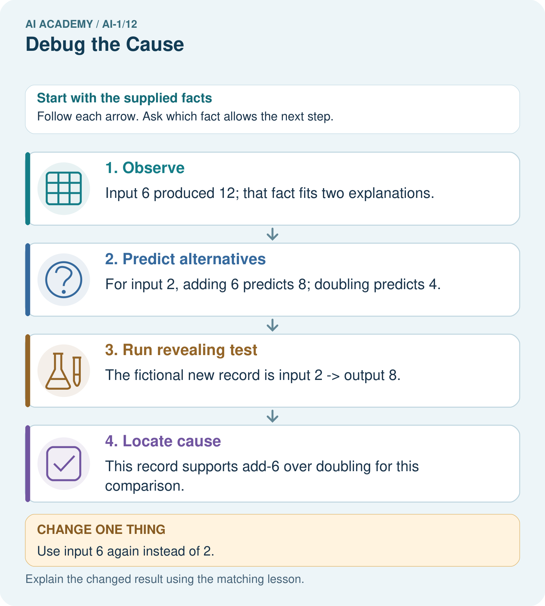
Read the picture one step at a time
Why this result follows
Repeating input 6 would not separate the two hypotheses because both again predict 12. Input 2 makes their predictions different before the test is run. The second record supports investigating an added constant, but inspecting the instruction is still needed to confirm the implementation.
What this example does not establish
Two toy hypotheses do not exhaust every possible bug; a matching output alone cannot identify arbitrary hidden code.
Read the labelled picture: Propose input 0 and give both predicted outputs without inventing an observed result.
Change one thing: Use input 6 again instead of 2. Predict the result before checking the explanation. What remains the same?
Student lesson · 7 of 17
Find and repair a mistake
COMPARE
Same Result, Different Reason
A comparison helps reveal the true concept boundary.
| Case | Evidence | What it shows |
|---|---|---|
| Wrong turn | first divergence at step 4 | inspect orientation assumption |
| Missing card | input absent before step 1 | data/setup cause |
| Wrong threshold | branch changes at 10 | condition cause |
| Random rewrite | many steps changed | weak debugging evidence |
Repair two tempting claims
CLAIM A Debugging means rewriting everything that looks suspicious.
Repair:
CLAIM B The last visible error must be the original cause.
Repair:
A closer explanation
For an arithmetic step, choose inputs that produce different predictions under plausible faults. For a condition, test its equality case as well as values on each side. For a loop, include a false first test and a run that crosses its stopping boundary. A test list is stronger when you can explain what each case checks.
A useful bug report names the version and input, says what should happen, records what did happen, and identifies the first known difference. Include the repair and retest evidence once available. Passing a finite collection of tests increases confidence in those behaviours; it does not prove every possible input correct.
Student lesson · 8 of 17
Practise together
GUIDED PRACTICE
Try It, Check It, Explain It
Use support now so you can succeed independently later.

Explain how the picture story demonstrates this idea: Debugging finds the broken assumption or step before changing the solution.
Use a fresh example to explain bug.
Trace a new input → process → output example.
Find and repair the error in: The last visible error must be the original cause.
Invent one edge case and name the safe response.
A closer explanation
Suppose inspection confirms that the second instruction says add 4. Replace that instruction with double the current score. Keep the original failing test, then rerun other inputs. From starts 4, 2 and 5, the corrected final results should be 12, 8 and 14.
Change the suspected instruction while keeping the test inputs fixed. If you change several instructions and inputs together, it is harder to tell which change mattered. Rerun previously passing cases as regression tests, because a repair can accidentally break other behaviour.
Practise with less help: Choose between two explanations
Use workbook W2 for the connected example “Debugging with revealing tests”. First fill the input and rule boxes. Try the middle steps before asking for a hint. After a hint, try the next step yourself.
| Plan | Do | Check |
|---|---|---|
| What is given? Which rule or procedure applies? | Record each intermediate step. | Does the result follow? What remains unknown? |
Explain your trace to a partner. Your partner points to one step to check. Swap roles on the next case. Each person writes their own explanation.
Check your reasoning
Use the worked case for Debugging with revealing tests. Proposed explanation: “The last wrong number locates the fault”. Decide whether this explanation is supported. Point to the step or supplied fact that decides; explain your repair if needed.
Answer on your own before discussion. If you are unsure, say which step you need help with.
Explain the picture
Propose input 0 and give both predicted outputs without inventing an observed result.
This is supported practice. Keep the separately named independent case for an attempt before feedback.
Student lesson · 9 of 17
Run the investigation
EXPLORER LAB
Maze Cause Detective
Predict first, test honestly, and explain what the evidence means.
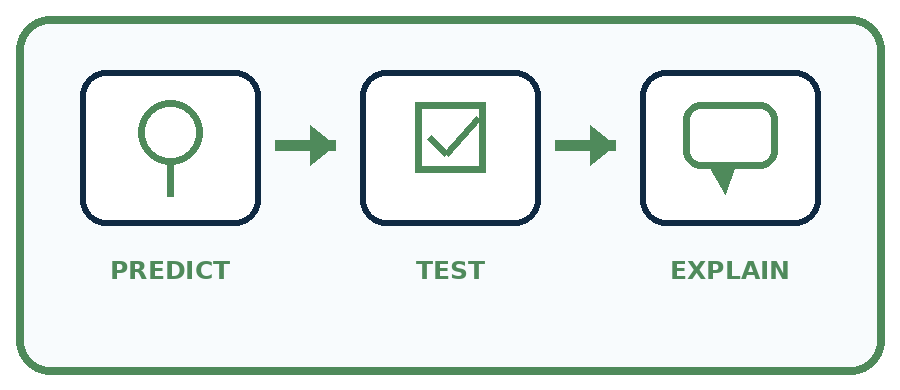
State your prediction before the result is known.
Complete the task: Repair a maze algorithm and explain the exact failure.
Keep a normal case and an edge case clearly separated.
Record what happened—even when it does not match your prediction.
Explain the result, one limitation, and the next useful test.
| Case | Prediction | Observed result | What it means |
|---|---|---|---|
| Normal | |||
| Edge |
Plan → try → check
Before trying: what do I expect, and why? While trying: which step could first go wrong? Afterwards: what did I actually observe, and what should change? Keep “not run” if you only traced the procedure.
Student lesson · 10 of 17
Build your understanding
PRACTICE LADDER
Climb from Recall to Defense
Each step asks for a stronger kind of understanding.
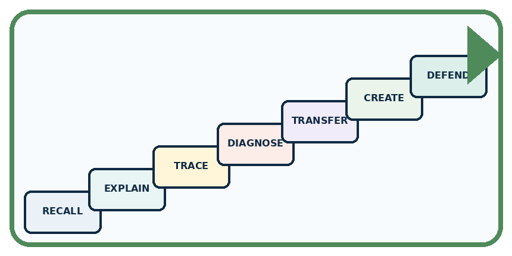
RECALL Define bug.
EXPLAIN Debugging finds the broken assumption or step before changing the solution.
TRACE Show the input, process, and output.
DIAGNOSE Repair: Debugging means rewriting everything that looks suspicious.
TRANSFER Apply the idea to a new home or classroom case.
CREATE Design one revealing test.
DEFEND Give a claim, evidence, mechanism, limit, and safe action.
Student lesson · 11 of 17
Connect your project
PROJECT
Helpful Classroom Sorter
Build one coherent system across the year, one evidence-based decision at a time.
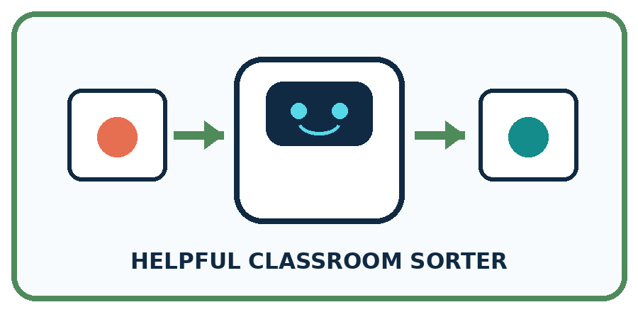
What real classroom need does this serve?
What information is necessary—and what should stay private?
What happens inside the process?
What normal and edge cases will you test?
When should it say not sure or ask a person?

My project decision:
Evidence for your project
When the sorter fails, write competing explanations and predicted traces before changing code or instructions.
Student lesson · 12 of 17
Show what you know
MASTERY
Fresh-Case Independent Proof
Complete this after teaching and guided practice have ended.
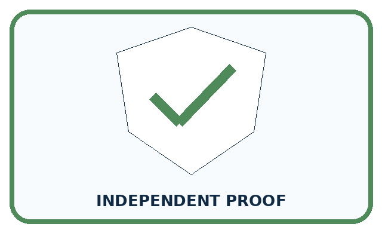
□ Name or draw the fresh case.
□ Trace input, process, and output.
□ State the conclusion and strongest evidence.
□ Name one limit, failure, missing clue, or fairness/privacy concern.
□ Explain one safe next action or improvement.
Independent evidence:
My level: □ Not yet □ With one hint □ Independently □ I can teach it
Student lesson · 13 of 17
Study a complete case
Week 12 Worked case
Use the supplied details to practise the weekly concept before attempting the independent question. This case extends the illustrated lesson.
The situation
A robot should go from square one to square three. Its program is MOVE ONE, STOP.
The question
Find the cause and repair one thing.
Worked explanation
It stops at square two because one move is missing. Add MOVE ONE before STOP and retest from the same start.
Explain it in your own words
Which detail supports the answer, and why does it matter?
Trace the supplied case visually
Repair the earliest missing action
| Evidence or stage | Value or result |
|---|---|
| Intended destination | Square three |
| Broken program | MOVE, STOP → square two |
| Repaired program | MOVE, MOVE, STOP → square three |
A robot should go from square one to square three. Its program is MOVE ONE, STOP.
Find the cause and repair one thing.
It stops at square two because one move is missing. Add MOVE ONE before STOP and retest from the same start.
Student lesson · 14 of 17
Try a new case independently
Independent case: Debug a new ticket rule
A paper ticket rule must add 1 to the input count. If the updated count is at least 5, report Group; otherwise report Single. A copied version says above 5. Choose the smallest three consecutive nonnegative starting counts that test just below, exactly at and just above the comparison boundary. Predict both versions, identify the revealing start and state the repair and retests.
Attempt this case before feedback. Record any help. Earlier examples below are further practice; a case already practised with feedback cannot establish fresh transfer.
Week 12 Independent application
Close the worked explanation. Apply the idea to this different question without copying.
A sorting rule says blue goes left. A blue card goes right. The reader correctly reports blue, but the direction rule says blue goes right. Which part should you fix first?
My answer, with a trace, calculation or supporting evidence
Create and test
Change one relevant detail. Predict the result before testing. Include a boundary or missing-information case when it helps reveal a limit.
My changed input and expected result
Connect to your project
When the sorter fails, log the first wrong stage and change only the responsible rule, input, or label.
The evidence I will keep
Your teacher has the independent answer and scoring criteria. Complete the matching workbook week to keep your practice evidence together.
Transfer practice from the original programme
The requirement is to move exactly three squares forward from any valid starting square, then stop. Starting at square 0, repeat twice {MOVE 1}; STOP ends at 2. A teammate reduces the required distance to two squares. Repair the program without changing the requirement; test starts 0 and 2.
Use feedback to improve
Attempt the independent case before hints. Record whether you worked alone, used a hint or followed a model. After feedback, fix the first unsupported step and explain why it changed. A later check uses a changed case, not a copied answer.
Student lesson · 15 of 17
Your lesson route
Start with this question: A fictional paper calculator should double the current value, but a copied instruction behaves strangely.
| By the end, I can | How I will show it |
|---|---|
| Compare expected and observed traces to locate the first difference | Explain the deciding step, show a trace or test, and state one limit. |
| Choose a test that distinguishes competing explanations of a fault | Explain the deciding step, show a trace or test, and state one limit. |
| Repair a stated instruction and rerun both the failing case and earlier passing cases | Explain the deciding step, show a trace or test, and state one limit. |
Remember → watch and explain → try with help → investigate → try independently → keep project evidence. Your teacher may spread this lesson across several classes.
Keep your first prediction. Compare it with what the evidence shows and explain any change.
Student lesson · 16 of 17
Finish and return
Close your notes. Explain this goal in your own words: Compare expected and observed traces to locate the first difference
If you are unsure, return to the worked picture and explain one arrow. If you are ready, change an input or assumption and justify your prediction.
Save your workbook evidence. At the next review, try a different case before opening your old answer.
Student lesson · 17 of 17
Supported practice, repair and portfolio
Use this supported practice once, in the browser or on paper. Keep the reserved independent assessment for a separate first attempt before teacher feedback.
A fictional paper calculator should double the current value, but a copied instruction behaves strangely.
Practice 1: explain the deciding evidence
Which labelled step matches this detail? This record supports add-6 over doubling for this comparison.
1. Observe
2. Run revealing test
3. Predict alternatives
4. Locate cause
Hint if needed: Read the steps in the pictorial case. Match the supplied detail to the stage that performs or records it.
After your attempt, compare with the supported explanation: Locate cause This record supports add-6 over doubling for this comparison. Repeating input 6 would not separate the two hypotheses because both again predict 12. Input 2 makes their predictions different before the test is run. The second record supports investigating an added constant, but inspecting the instruction is still needed to confirm the implementation.
Practice 2: explain the deciding evidence
Changed-case practice: Use input 6 again instead of 2. Which conclusion is supported by the supplied facts?
1. We can decide the result without examining the changed input or the procedure.
2. Both hypotheses predict 12; the test remains inconclusive.
3. This one example guarantees correct results for every future input.
Hint if needed: Use the changed condition and the deciding step in the pictorial trace. The answer must say what follows from those facts.
After your attempt, compare with the supported explanation: Both hypotheses predict 12; the test remains inconclusive. A revealing test requires different predicted outputs, not merely another recorded run.
Repair a missing building block
Review Repeating Efficiently (ai-1/11). Goal: Trace a loop by testing its condition before every repetition. Short practice: Trace a fresh start of 9. How many additions occur, and must the report equal 10?. Return to this week and explain what you changed.
Review Algorithms as Recipes (ai-1/9). Goal: Trace an ordered algorithm using the current value after every instruction. Short practice: Use the arrows to explain where the two zero-start runs first differ.. Return to this week and explain what you changed.
Review Sound Becomes a Signal (ai-1/6). Goal: Interpret an ordered sequence of sound-signal samples with a stated time interval. Short practice: Does the all-zero retained record prove the full signal was silent? Use the picture.. Return to this week and explain what you changed.
Keep your completed work
Use Download completed work in the hosted lesson to export your answers, reflections, practice feedback and code-run evidence. Open the HTML copy to read or print it. Drafts stay in this browser when storage is available; clear drafts on a shared device.